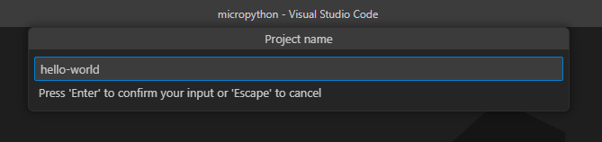
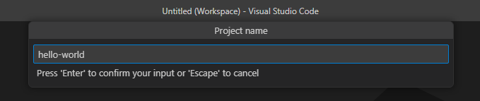
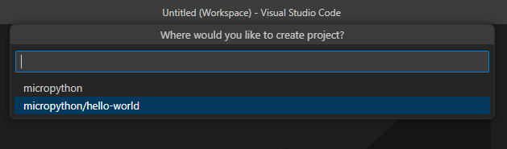
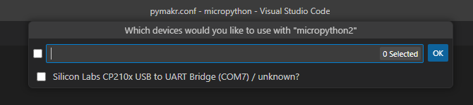
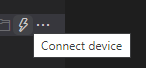
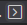
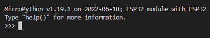
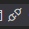

VS Code Setup and Usage
Installation
Download from here
Installation Options
- Accept the default installation path
- keep "Register Code as an editor for supported file types" checked
- keep "Add to PATH" checked
- other options: set to your preference
Useful command-line arguments
Note: this only works if you added vscode to your system
PATH
Usage: code [options][paths...]
Example:
code -n ~/websites/danb0b.github.io/
will open a new folder with that path loaded in the explorer window
-a --add <folder> Add folder(s) to the last active window.
-n --new-window Force to open a new window.
-r --reuse-window Force to open a file or folder in an already opened window.
--extensions-dir <dir> Set the root path for extensions.
--list-extensions List the installed extensions.
--show-versions Show versions of installed extensions, when using --list-extensions.
--install-extension <ext-id | path> Installs or updates an extension.
--uninstall-extension <ext-id> Uninstalls an extension.
--enable-proposed-api <ext-id> Enables proposed API features for
--disable-extensions Disable all installed extensions.
--disable-extension <ext-id> Disable an extension.
--sync <on | off> Turn sync on or off.
Shortcuts
| Key Combination | Description |
|---|---|
| ctrl+shift+p | opens the command window |
| ctrl+shift+e | opens explorer |
| ctrl+shift+x | opens extensions |
| ctrl+shift+g | opens git |
| ctrl+shift+f | opens search |
| ctrl+shift+k | remove line |
| ctrl+shift+/ | comment line: |
| ctrl+up | move line up |
| ctrl+down | move line down |
| ctrl+k,v | preview |
| ctrl+shift+i | format document |
| ctrl+i | italicize selection |
| ctrl+b | bold selection |
Extensions
from here
open powershell and paste the following in:
code --install-extension bierner.markdown-yaml-preamble
code --install-extension davidanson.vscode-markdownlint
code --install-extension ms-python.isort
code --install-extension ms-python.python
code --install-extension ms-python.vscode-pylance
code --install-extension Pycom.pymakr-preview
code --install-extension redhat.vscode-yaml
code --install-extension shd101wyy.markdown-preview-enhanced
code --install-extension yzane.markdown-pdf
code --install-extension yzhang.markdown-all-in-one
code --list-extensions
Markdown all-in-one
go to settings @id:editor.defaultFormatter @lang:markdown formatter ctrl_+ shift + I then formats your document
pymaker
-
install pymakr preview
bash code --install-extension Pycom.pymakr-preview
Getting Started (from here)
- In File explorer(
ctrl+shift+e)- add or create a project folder for holding your micropython code (suggestion: name it "micropython"). Consider creating one in your "code" git repository.
-
navigate to "Pymakr: Projects" tab in the workspace explorer window on the left
-
select "create project". Select the same code folder as above and specify a project name (like "hello-world"). Select the option to create a subdirectory with the micropython folder.




-
Connect your device via usb to your computer
-
Within the "hello-world" project that is created within the "Pymakr: Projects" tab, add a new device. Follow the prompts to select the appropriate com port

-
Connect to the device by selecting the lightning bolt icon

-
Open up a terminal window by selecting the box with an arrow in it

-
A terminal window should open and look like this:

```python MicroPython v1.19.1 on 2022-06-18; ESP32 module with ESP32 Type "help()" for more information.
```
-
At the command prompt, type in
python print('hello world')which should return
python hello world -
If you wish to disconnect, you can use:

-
Working with the Python interpreter
Micropython can either run code from the interpreter (the "terminal" as vs code puts it), or by loading a file from its onboard storage. When the ESP32 is reset (using the EN button), it looks for two files, in a specific order:
- boot.py
- main.py
if there are any loops in these files that prevent execution from ending, you must type ctrl+c to terminate execution from the interpreter window. This will stop any python files from running and bring control back to the interpreter
You must always stop execution on the ESP32 before trying to upload files to it.
Saving files to/from the ESP32
Within the "Pymakr: Projects" workspace there are several other buttons that you can use to sync files to the esp32
- Upload project to device: Uploads all your project files to the device
- Download project from device: Pulls files off the device
- Open in Explorer: This opens up the ESP32 as a virtual file system in the file explorer and allows you to investigate and work with the file system directly.
From the file explorer window, you can also right click and select "pymakr-->upload to device" to upload individual files
External Resources
- https://github.com/pycom/pymakr-vsc/blob/HEAD/GET_STARTED.md
- https://marketplace.visualstudio.com/items?itemName=pycom.Pymakr
Other:
- https://randomnerdtutorials.com/micropython-esp32-esp8266-vs-code-pymakr/
- https://lemariva.com/blog/2018/12/micropython-visual-studio-code-as-ide
- https://lemariva.com/blog/2018/12/micropython-visual-studio-code-as-ide
- https://docs.espressif.com/projects/esp-idf/en/stable/esp32/get-started/vscode-setup.html
- https://stackoverflow.com/questions/67647095/how-to-setup-windows-10-vscode-pymakr-for-python-programming-micropython